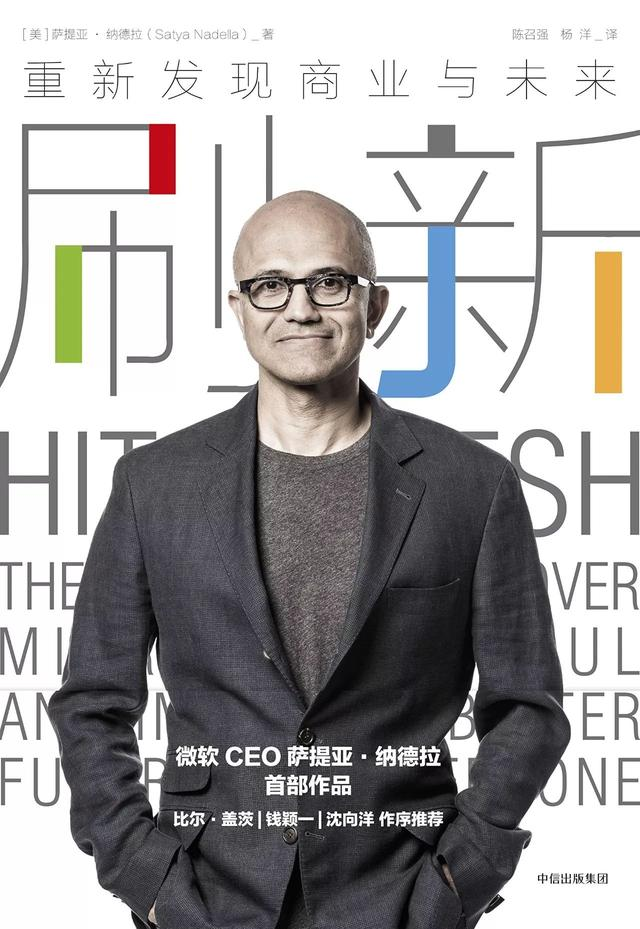

注：【】部分为笔者心得，非原文摘抄。
- 不遗余力地进行竞争，在面对不确定性和威胁时要充满激情。
- 尊重你的竞争对手，但不要胆怯，要敢于竞争。
- 一个有才华的人如果不把团队放在首要位置，就会毁掉整个团队。
- 领导者首先要做的事情就是：激发所带领团队中成员的信心。
- 弹性是云计算架构的核心特征。
- 在一个成功的公司里，忘记一些旧的习惯和学习新的技能同等重要。
- 在任何一家大型组织，任何艰难的转型都必须从内部突破。
- 领导意味着做选择，然后将团队团结在这些选择周围。
- 对领导而言，通过命令达成的共识并不是真正的共识。任何机构建设都源于清晰的、既能自上而下也能自下而上推动进步的愿景与文化。
- 转型必须由内部发起，从核心向外扩散，这也是唯一能确保变革可持续的方式。
- 与客户会面，了解他们已表达的和未曾表达的需求，是所有产品创新的关键。
- 领导者必须同时看到外部的机会和内部的能力与文化，以及它们之间的所有联系，并在这些洞察变得众所周知之前率先反应，抢占先机。
- 收购低市场份额公司一向充满风险。
- 高级管理团队需要成为一个有共同世界观和有凝聚力的团队。
- 辩论和争论是绝对必要的，就彼此的想法提供改进意见和建议是至关重要的。
- 对一个组织来说，与文化最相关的是人们日常生活中所坚守的价值观、风俗、信仰和具有象征意义的实践。
- 固化型思维会限制你的发展，而成长型思维则会推动你前进。
- 先天条件只是一个起点。激情、努力和训练才能帮助你快速进步。
- 同理心对于解决任何地方的问题都至关重要。
- 首席执行官 CEO 中的 C 字，希望它代表的是文化。
- 推动文化变革需要细致的工作，需要一些具体的理念。同时，它还需要显著的、明确的行动，抓住团队成员的注意力，并将他们推出熟悉的舒适区。
- 保持用伟大技术满足客户未能表达的和未被满足的需求的渴望。
- 要以初学者的心态去了解和学习我们的客户以及他们的业务，为客户提供卓有成效的解决方案。
- 积极寻求多元化和包容性会让我们处于最佳状态。
- 面对偏见，任何提倡被动性的建议都是错误的。领导者需要采取行动，根除文化中的偏见，创造一个人人可以有效主张自我的环境。
- 经理要有高要求，但同时也要有同理心，懂得如何激励员工。同样，员工要埋头苦干、努力工作，但他们也有权利要求承担更大的责任和得到更高的认可。
- 三条领导原则：
- 第一，向共事的人传递明确的信息。这是领导者每一天、每一分钟都要做的最基本的事情之一；
- 第二，领导者要产生能量，不仅在他们自己的团队中产生能量，而且要在整个公司产生能量；
- 第三，找到取得成功和让事情发生的方式。
- 什么情况下建立伙伴关系比并购更合适？这个问题最好通过另一个问题来回答，即“我们作为一个共同实体为客户创造的价值多，还是作为两个单一实体为客户创造的价值多？”
- 忽视现有业务核心而去追求未经检验的未来技术是一件非常危险的事情。
- 创新者面临的典型困境是在追求新机会的同时，也有可能错失唾手可得的成功。
- 在创造未来的道路上并没有一定之规。
- 你至少要懂两门语言，才能真正理解一门语言。—— Geoffrey Willans
- 狂热支持一种价值观很容易，但并不代表它就是对的。
- 没有一个值得信赖的国际制度，任何国家都不安全。
- 信任需要核实。—— Ronald Reagan
- 同理心＋共同价值观＋安全可靠＝信任
- 在时间的流逝中保持一致就是信任。—— Jeff Weiner
- 如果不能反映人们的生活和现实，一切产品或政策都是徒劳。而要反映人们的生活和现实，则要求产品或政策的设计者真正了解和尊重相关价值观和经历，它们是这些现实的基础。
- 确保个人的自由向来并非易事，社会、文化和政治因素都可能在塑造被人们认为理所当然的权利中，发挥难以预料的作用。
- 言论自由在一定程度上取决于阅读、思考和起草所需的隐私。
- 预测未来的最好方法就是创造未来。—— Alan Kay
- 不平等最终会给每个人都带来更快的增长和更大的繁荣。
- 从给世界创造变化的角度来看，商业是人类最具弹性、最具重复性、最为有效的机制。—— John Batelle
- 真正的商业成功，以及通常所说的资本主义，不能仅仅是为自己的核心支持者创造利益，还要创造更广泛的利益，造福于更广阔的的社区。